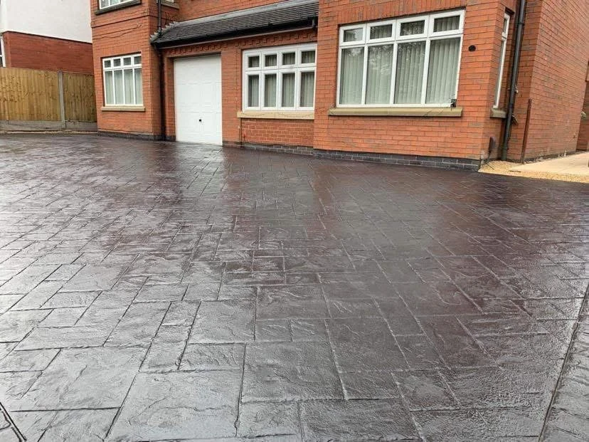
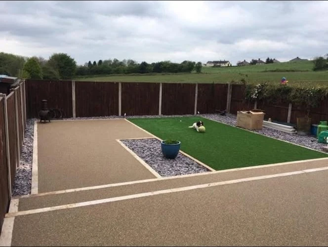
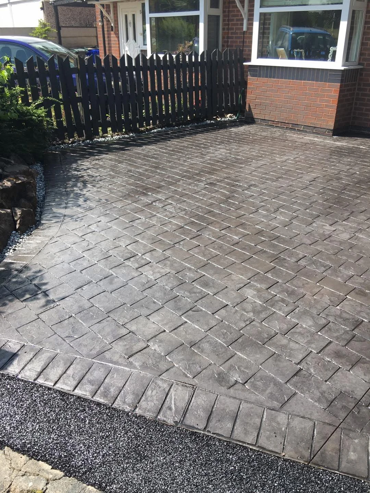

DRIVEWAYS · PATIOS · PAVING · LANDSCAPING
Made for everyday living.
A driveway that welcomes you home. A patio for time outside. A garden where every level and pathway has a purpose.
Trugrit Driveways works across Stoke-on-Trent and surrounding areas. From a single paved area to a wider garden project, tell us what you want your outdoor space to do.
Start with your ideas →

FEATURED GARDEN
Every level, considered.
Stepped paving, timber retaining edges and a central green space bring this terraced garden together. The layout creates distinct areas while keeping a clear route between levels.
Have a sloping or stepped space to rethink? Share photographs and rough dimensions to discuss the possibilities.
Explore landscaping →PROJECT GALLERY
The details make the difference.
Explore driveway finishes, paved patios and garden layouts. Tap any photograph to see the complete view.
A CLOSER LOOK
A place for the little moments.
Light paving, a tidy lawn edge and steps connect the house to the garden. Materials and levels can make even a compact area feel more useful.
Patio ideas →TRUGRIT DRIVEWAYS
Your home.
Your next improvement.
Thinking about replacing your driveway or making more of the garden? Start with the practical details: how you use the space, the finish you prefer and what you would like to keep.
Send clear photographs, approximate measurements and your postcode.
Discuss surfaces, layout, levels and access with your priorities in mind.
Receive a free quote and discuss the work and availability before booking.
LOCAL OUTDOOR PROJECTS
Stoke-on-Trent & surrounding areas.
Contact Trugrit Driveways with your postcode to confirm coverage and arrange the next step for your driveway, patio or landscaping enquiry.
LET’S GET STARTED
Your next project starts here.
Choose your service and tell us what you have in mind. The form opens WhatsApp with your enquiry ready to review and send. Add your project photos there.
Include approximate dimensions, the existing surface and any access restrictions. Quotes are free.
Your details are shared only when you send the message. Privacy information.GOOD TO KNOW
A few answers.
What services do you offer?
Driveways, patios, paving and garden landscaping. You can enquire about one service or a project that combines several.
Where do you work?
Stoke-on-Trent and surrounding areas. Include your postcode so coverage and availability can be confirmed.
Are quotes free?
Yes. Contact Trugrit Driveways for a free quote and include photographs and rough dimensions where possible.
Can I discuss a stepped garden?
Yes. The gallery includes terraced paving, retaining edges and garden steps. Share photographs showing the levels and access to your space.
What should I include in my enquiry?
Your location, the approximate area, existing surface, preferred finish and any access restrictions. Photographs help explain the job.
How do I contact you?
Call 07833 729238 or use the WhatsApp buttons and quote form. Review your message before sending it.
TRUGRIT DRIVEWAYS · STOKE-ON-TRENT
Let’s transform your space.
Call us or send your ideas and photos on WhatsApp for a free quote.